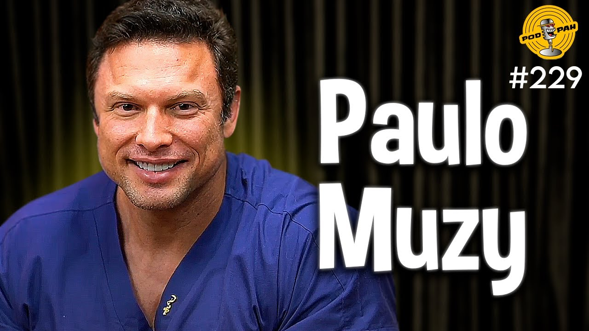

Flow Podcast é um podcast brasileiro fundado por Bruno Monteiro Aiub (Monark) e Igor Rodrigues Coelho (Igor 3K) em 2018.
O podcast é dirigido e produzido por Gianluca Santana Eugenio (Gianzão — 29 de março de 1997). O podcast já entrevistou várias pessoas, incluindo políticos, influencers digitais, entre outras celebridades.
É considerado um dos mais assistidos do país, com mais de 4 milhões de inscritos no YouTube.